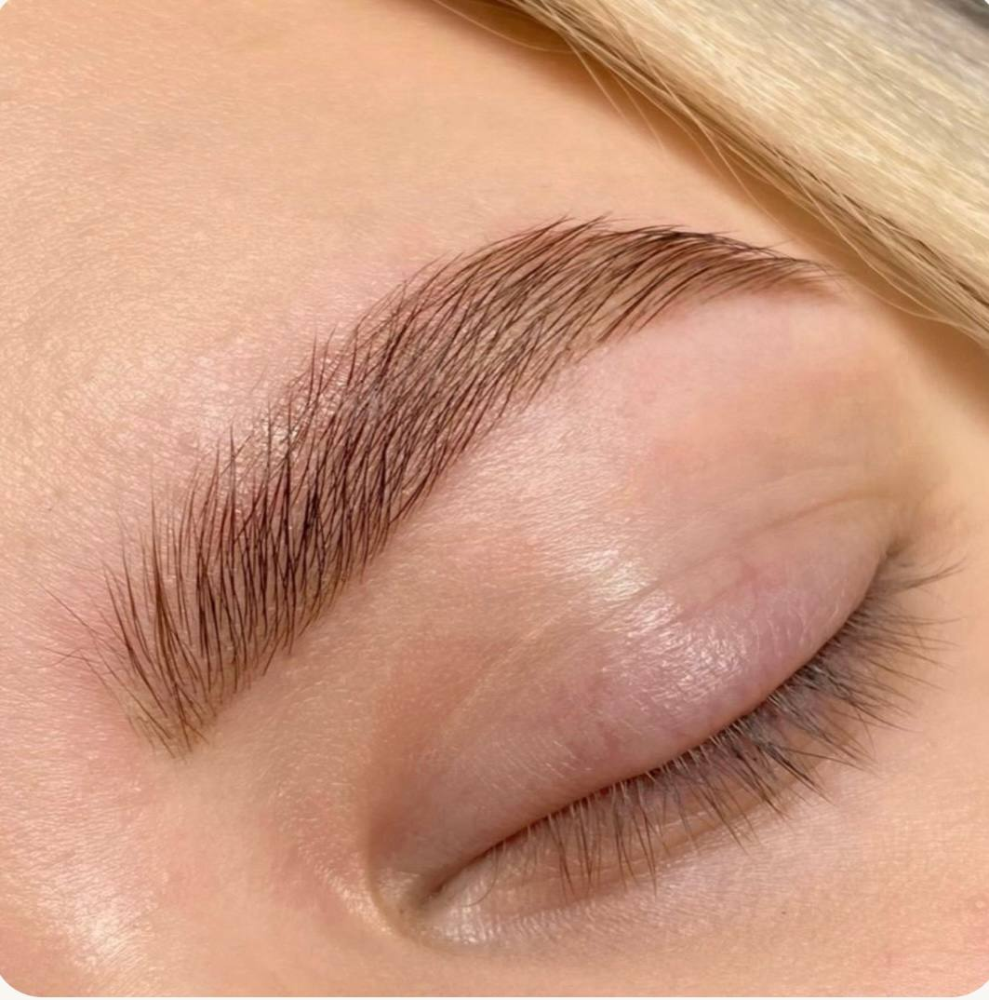

Nasveti za lepoto
Beauty tips
Советы по красоте
Поради з краси
Praktični nasveti o ličenju, trepalnicah, obrveh in negi kože — iz studia v Mariboru.
Practical tips on makeup, lashes, brows and skincare — from the studio in Maribor.
Практические советы по макияжу, ресницам, бровям и уходу за кожей — из студии в Мариборе.
Практичні поради про макіяж, вії, брови та догляд за шкірою — зі студії в Мариборі.

Korejska laminacija trepalnic v Mariboru: komu ustreza in kako poteka
Korean lash lamination in Maribor: who it suits and how it works
Корейское ламинирование ресниц в Мариборе: кому подходит и как проходит
Корейське ламування вій у Мариборі: кому підходить і як проходить
Komu je namenjena, kako poteka tretma, koliko zdrži in kako skrbeti po njem.
Who it is for, how the treatment works, how long it lasts and how to care for it.
Кому подходит, как проходит процедура, сколько держится и как ухаживать.
Кому підходить, як проходить процедура, скільки тримається і як доглядати.

Korekcija in barvanje obrvi v Mariboru: kako izbrati obliko
Brow shaping and tinting in Maribor: how to choose the right shape
Коррекция и окрашивание бровей в Мариборе: как выбрать форму
Корекція та фарбування брів у Мариборі: як вибрати форму
Kako izbrati obliko glede na obraz, kako poteka tretma in kako skrbeti po njem.
How to choose a shape for your face, how the treatment works and how to care for it.
Как подобрать форму под лицо, как проходит процедура и как ухаживать после.
Як підібрати форму під обличчя, як проходить процедура і як доглядати після.